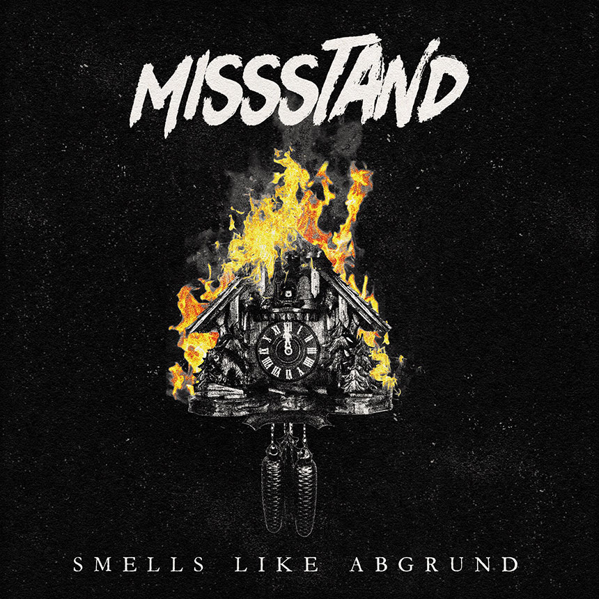

Review
MISSSTAND - 2026

Kurz TV-Rauschen.
Dann Drums.
Dann Gitarre.
Und dann BÄM.
MISSSTAND verschwenden bei "2026" wirklich keine Zeit. Kein langer Spannungsaufbau. Keine drei Minuten Anlauf. Keine musikalische Betriebsversammlung, bei der erst einmal erklärt wird, was gleich passieren soll.
Nach ungefähr 16 Sekunden ist klar:
Das hier wird unangenehm.
Kurz bevor der Gesang einsetzt, wird es noch einmal etwas ruhiger. Dieser klassische Moment, in dem eine Band so tut, als würde sie den Hörer erst einmal freundlich abholen wollen.
Ist natürlich gelogen.
Man bekommt genau eine Sekunde Zeit zum Durchatmen.
Dann gibt es wieder auf die Fresse.
Das Ganze ist eigentlich super billig aufgebaut.
Und ich meine das als Kompliment.
Spannung.
Kurz Luft holen.
Eskalation.
Das hätte Dieter Bohlen vom Prinzip her vermutlich auch verstanden.
Der Unterschied ist nur:
Bohlen hätte daraus eine Castingshow-Single gebaut.
MISSSTAND bauen daraus einen Song, bei dem beim ersten Hören plötzlich die Faust in der Luft hängt und man selbst nicht genau weiß, wann das eigentlich passiert ist.
Besonders dieser Bro-Chor funktioniert erschreckend gut.
Ja, ich weiß. Wahrscheinlich gibt es dafür einen richtigen Fachbegriff. Gang Vocals, Singalong oder sonst irgendwas, das Musiker in Interviews sagen, um schlau zu wirken.
Mir egal.
Für mich bleibt das ein Bro-Chor.
Mehrere Leute brüllen ein paar Worte gemeinsam ins Mikrofon und plötzlich hat die Nummer doppelt so viel Druck.
Fuck.
Genau an dieser Stelle hat es mich erwischt.
Das Ding trifft wie ein Gummigeschoss auf einer Demo.
Und ja, dann kommt da noch dieser Teil, bei dem die Instrumente kurz übernehmen dürfen, damit der Sänger wieder Luft bekommt. Bridge, C-Teil, Instrumentalbreak - nennt es wie ihr wollt.
Braucht man den?
Eigentlich nicht.
Ist das bei Songs, die möglichst frontal einschlagen wollen, völlig normal?
Leider ja.
Einmal kurz sammeln.
Einmal den Nacken richten.
Weiter.
Laut Aggressive Punk Produktionen ist "2026" der erste Vorbote des kommenden Albums "Smells Like Abgrund", das am 18. September 2026 erscheinen soll. In der Presseinfo ist von Gegenwart, Dunkelzeit und Abgrund die Rede.
Kann man alles lesen.
Muss man aber nicht.
Denn auch ohne Pressemappe merkt man ziemlich schnell, was hier passiert.
MISSSTAND wollen keinen schlauen Vortrag halten.
MISSSTAND wollen einschlagen.
Und genau das gelingt ihnen verdammt gut.
Ob der Song subtil ist?
Nö.
Ob er elegant ist?
Auch nö.
Ob ich beim ersten Hören kurz dachte: "Das ist aber schon sehr nach Gebrauchsanweisung für Eskalation gebaut"?
Ja.
Ob ich trotzdem mitgehen musste?
Verdammte Scheiße! Ja!!!
Das Musikvideo zu "2026" gibt es hier: MISSSTAND - 2026.
Mehr zur Band findet ihr bei MISSSTAND, mehr zum Release bei Aggressive Punk Produktionen. Und wer unbedingt so tun möchte, als wäre das hier keine reine Songbesprechung, findet den Kram halb versteckt auch im Out Of Vogue / Aggropunk-Shop.